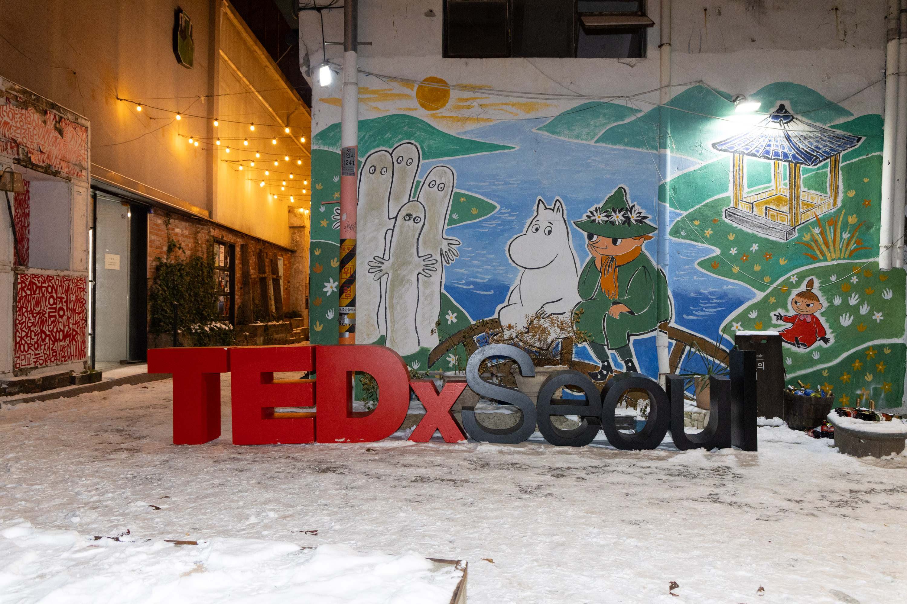

TEDxSeoul Year-End Gathering 2025
December 5, 2025
TEDxSeoul Year-End Gathering 2025 ‘The Story Continues’
December 5, 2025; Joseon Salon KOTE, Insadong

On December 5, 2025, I gave a talk at TEDxSeoul on why climate science might be asking the wrong questions, and what happens when we replace crisis framing with imagination. It was the beginning of a line of thinking I’m still developing. Climaginative grew out of it.
Photos: TEDxSeoul Photographer